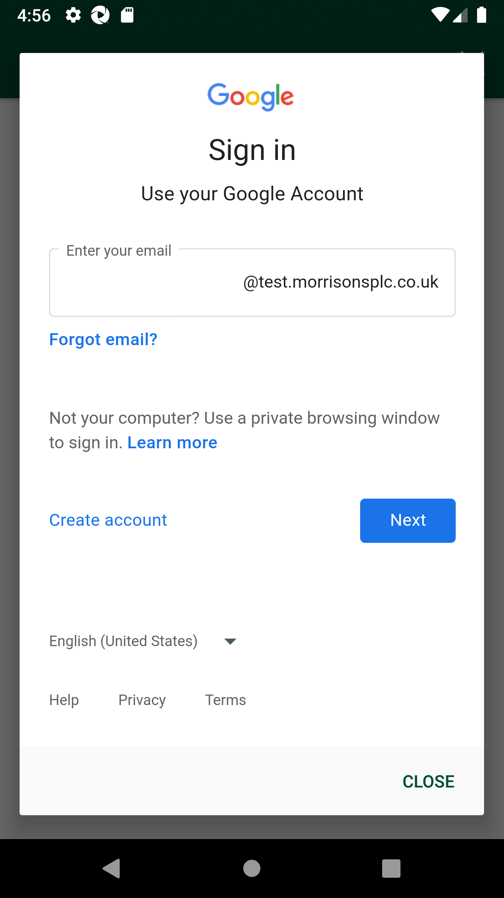

-
Waste Validation - Weekly Manager SignOff
4:55:33 PM / 00:01:22:707 Fail
Waste Validation - Weekly Manager SignOff
01.02.2024 4:55:33 PM 01.02.2024 4:56:55 PM 00:01:22:707 · #test-id=1@weekly_manager_signoffFailWeekly Manager SignOff before SignOffWhen I enter Username and Password for SMA Manager usercom.morrisons.common.action.Hook.afterScenario(io.cucumber.java.Scenario)
And I click on login button for SMAStep skippedAnd I click on "Stock Adjustments" on Home PageStep skippedAnd I click on "Waste Validation" on Stock Adjustment PageStep skippedAnd I verify Weekly Manager Sign Off status "AWAITING SIGN OFF"Step skippedAnd I click on "Weekly Manager Sign Off" on Waste Validation PageStep skippedAnd I verify date range and Weekly Manager Sign Off status "AWAITING SIGN OFF"Step skippedAnd I verify unrecorded waste as Weekly ManagerStep skippedAnd I verify Weekly Wastage Validation Completion is displayedStep skippedAnd I verify Weekly Weekly Department Completion is displayedStep skippedAnd I verify list of days with the status "COMPLETE"Step skippedAnd I verify list of days with status "INCOMPLETE"Step skippedAnd I click on any day system should redirect to "CHECKS" tabStep skippedAnd I click on "Back" buttonStep skippedAnd I verify "SIGN OFF" button is displayedStep skippedAnd I click on Weekly Wastage Validation Completion viewStep skippedAnd I view two tabs "CHECKS" and "DEPARTMENTS"Step skippedAnd I click Departments tabStep skippedAnd I click on "Back" buttonStep skippedAnd I click on Weekly Department Completion viewStep skippedAnd I click Checks tabStep skippedAnd I verify item check details for a day if all trays are completed with "COMPLETE" statusStep skippedAnd I verify item check details for a day if no trays are completed with "INCOMPLETE" statusStep skippedAnd I click Departments tabStep skippedAnd I verify Department,Pass,Fail,Waste columnStep skippedAnd I verify Department Waste column is in descending orderStep skippedAnd I click on "Back" buttonStep skippedAnd I click on "SIGN OFF" buttonStep skippedAnd I verify Store manager weekly sign off at topStep skippedAnd I verify date of previous week at topStep skippedAnd I verify Please confirm that you have completed the following before signing off is displayedStep skippedAnd I verify four check boxesStep skippedAnd I verify Reviewed the weekly activity is displayedStep skippedAnd I verify Reviewed all in store waste areas and confirm all waste in areas conforms to policy is displayedStep skippedAnd I verify Spoken to departments with high unrecorded waste is displayedStep skippedAnd I verify Actions next steps documented is displayedStep skippedAnd I verify Able to view text field to write comments if any is displayedStep skippedAnd I able to check all boxes and click sign offStep skipped
-
org.openqa.selenium.NoSuchElementException
1 tests
org.openqa.selenium.NoSuchElementException
1 failedStatus Timestamp TestName Fail 16:56:06 PM When I enter Username and Password for SMA Manager user Waste Validation - Weekly Manager SignOff.Weekly Manager SignOff before SignOff.When I enter Username and Password for SMA Manager user
-
@sma
1 tests
@sma
1 failedStatus Timestamp TestName Fail 16:55:33 PM Weekly Manager SignOff before SignOff Waste Validation - Weekly Manager SignOff.Weekly Manager SignOff before SignOff -
@weekly_manager_signoff
2 tests
@weekly_manager_signoff
2 failedStatus Timestamp TestName Fail 16:55:33 PM Waste Validation - Weekly Manager SignOff Fail 16:55:33 PM Weekly Manager SignOff before SignOff Waste Validation - Weekly Manager SignOff.Weekly Manager SignOff before SignOff
Started
Jan 2, 2024 04:55:29 PM
Ended
Jan 2, 2024 04:56:58 PM
Features Passed
0
Features Failed
1
Features
Scenarios
Steps
Timeline
Tags
| Name | Passed | Failed | Skipped | Others | Passed % |
|---|---|---|---|---|---|
| @sma | 0 | 1 | 0 | 0 | 0% |
| @weekly_manager_signoff | 0 | 2 | 0 | 0 | 0% |